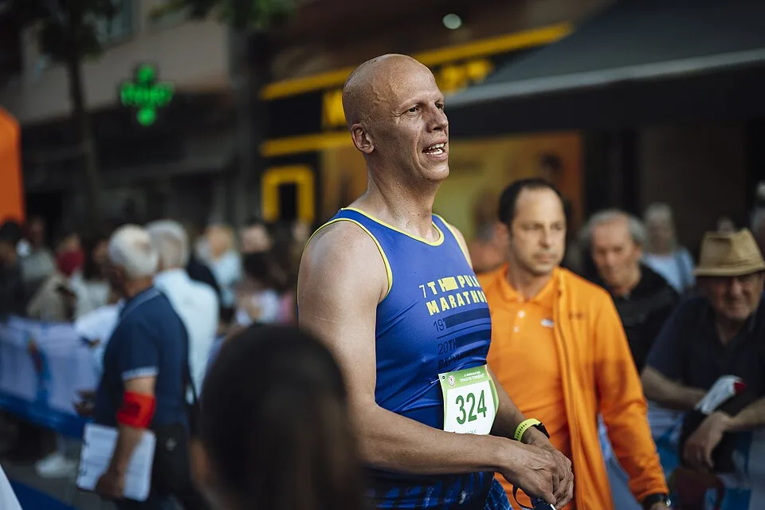

写真：街なかのマラソンで、走り終えて沿道の人に笑う人。この大会の写真ではありません。Shixart1985／Wikimedia Commons／CC BY 2.0
申し込みの締め切り
12月18日（金）17:00
2026年。手数料を払うところまで済ませて、受付になります。
定員になった種目は、その時点で受付を終えます。
- 今日 11月7日10月1日受付を始めました
- 12月18日17時に締め切り
- 1月下旬参加案内・ゼッケン・計測チップを郵送
- 2月21日大会の日（日曜）
申し込みのページへ
支払いはクレジットカードかコンビニ。申し込んだあとの取り消し・返金はできません（荒天で中止のときは、下の「雨の日」を見てください）。